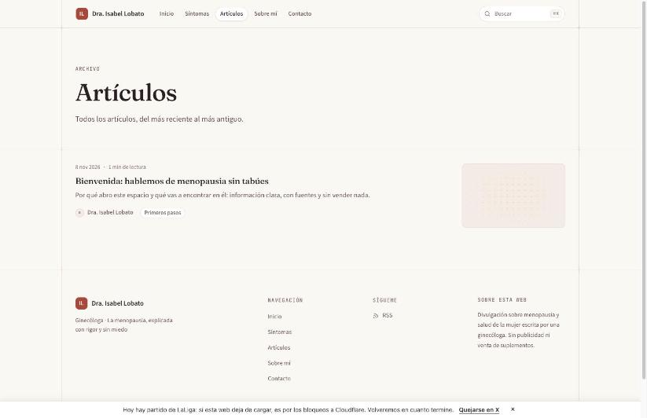
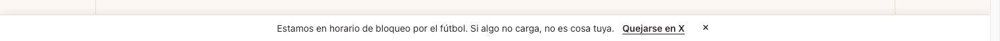
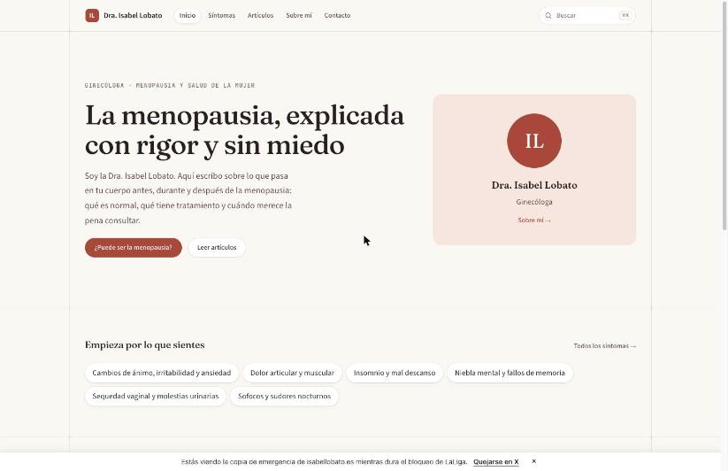
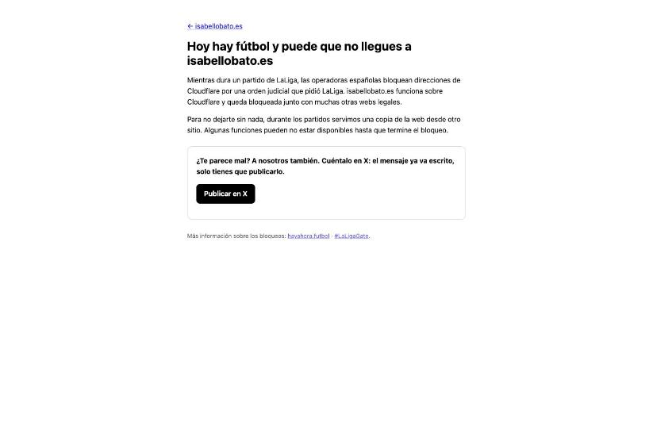
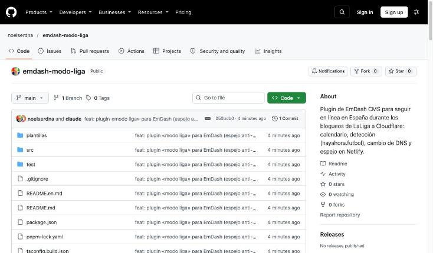
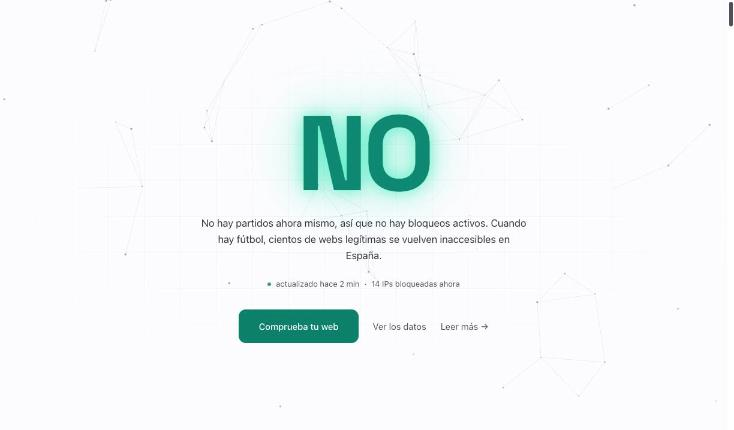

emdash-modo-liga · guía para quien no programa
Los días de partido de LaLiga, muchas webs españolas desaparecen durante unas horas. Este complemento de EmDash hace que la tuya no: avisa a quien la visita, la mueve a un sitio seguro mientras dura el bloqueo y la devuelve sola cuando termina.
Desde diciembre de 2024, por una orden judicial que pidió LaLiga, las operadoras españolas (Movistar, Orange, Vodafone, Digi y otras) cortan el acceso a ciertas direcciones de internet mientras se juega un partido. El problema es que esas direcciones son compartidas: pertenecen a Cloudflare, la empresa que sirve miles de webs legales, entre ellas la tuya. Cuando bloquean una dirección por una web pirata, caen con ella todas las demás.
El bloqueo no avisa. Quien intenta entrar en tu web desde España ve un error de conexión, como si la web no existiera. Fuera de España, y para Google, todo sigue funcionando. Y una hora después del partido, todo vuelve a la normalidad sin que nadie haya tocado nada.
Cada cinco minutos mira dos cosas: el calendario de Primera y Segunda División, y un medidor público de bloqueos (hayahora.futbol) que dice qué direcciones están cortadas ahora mismo. Con eso decide si tu web está en peligro. Si lo está, cambia una señal de tráfico en internet para que los visitantes lleguen a una copia de emergencia alojada en otra empresa (Netlify) que las operadoras no bloquean. Cuando el peligro pasa, deshace el cambio.
Son capturas reales de isabellobato.es con el plugin instalado. El aviso aparece abajo, sin tapar nada, y se puede cerrar.




El plugin trabaja solo. No hay que mirar el calendario ni acordarse de activar nada. Si publicas un artículo, la copia de emergencia se actualiza al cuarto de hora. Si LaLiga cambia un horario, el plugin lo lee ese mismo día.
Aun así tienes tres mandos, en el panel de EmDash (Plugins → modo-liga) o pidiéndoselo a Claude si tienes conectado el MCP de tu web:
Un detalle que conviene saber. Mientras la web va por la copia, Google también la ve así. No pasa nada: la copia conserva las mismas direcciones y el mismo contenido. Y si la copia también fallara algún día (Netlify no es inmune, aunque hoy no está en las listas de bloqueo), la web volvería a Cloudflare sola en cuanto acabe la ventana.
Esta parte la hace una persona técnica, tarda una tarde y no se repite. Son seis pasos; la guía detallada, con los comandos exactos, está en el repositorio del plugin.
emdash-modo-liga init, que prepara la carpeta con todo lo necesario.Dónde está isabellobato.es a 8 de noviembre de 2026 (20:40). Todo en marcha y probado en vivo. Los cinco pasos están hechos: el plugin va en el código de la web, la copia de emergencia existe en Netlify (proyecto isabellobato-espejo) con una copia completa de la web y su propio certificado, los tres secretos están puestos y el dominio ya está preparado para cambiar de sitio. A las 20:30, en pleno bloqueo del partido de las 21:00, el plugin pasó la señal de tráfico a Netlify y la web volvió a cargar desde una conexión española bloqueada, con el buscador y el panel funcionando a través de la copia. Esa misma tarde el bloqueo real sirvió para corregir dos fallos del plugin. Queda por confirmar la vuelta automática a Cloudflare cuando acabe el partido y dejar configurada la renovación automática del certificado.
Todo se cambia desde el panel de EmDash sin tocar código. Los valores de serie funcionan bien; estos son los que más sentido tiene revisar.
Ve la web igual, con una franja al pie que explica la situación. Los artículos cargan desde la copia; el buscador y el panel funcionan a través de ella. Lo único que puede ir algo más lento es la primera carga, porque la copia está en otro proveedor.
Porque los bloqueos han alcanzado a otros proveedores (Amazon, Vercel, GitHub Pages, Bunny…). Cloudflare sigue siendo la mejor opción el resto del tiempo. El plugin lo mantiene y solo lo esquiva durante las ventanas de riesgo.
Pasa, sobre todo en noches de Champions. Por eso el plugin también consulta hayahora.futbol: si detecta que las direcciones de tu web están bloqueadas, activa el modo liga aunque el calendario no diga nada, y lo desactiva cuando el bloqueo desaparece.
La orden judicial cubre tres temporadas y expira hacia junio de 2027. LaLiga ha anunciado que intentará prorrogarla. Si algún día deja de hacer falta, basta con poner «forzar: off» o desactivar el plugin.
Sí. El plugin es genérico: cualquier web hecha con EmDash en Cloudflare lo puede instalar. Nada del código es específico de isabellobato.es; el dominio, los textos y las cuentas se configuran en cada sitio.
Nada más allá de lo que ya pagas. Netlify, hayahora.futbol y el calendario de ESPN tienen versiones gratuitas suficientes para una web como esta. El plugin es de código abierto con licencia MIT.
El código del plugin, la guía técnica de instalación (README) y las plantillas para Netlify.
El medidor público de bloqueos. Sirve para comprobar en cualquier momento si hay bloqueo activo y qué operadoras lo aplican.
La plataforma de afectados. Recoge casos, pérdidas declaradas y las vías de queja ante LaLiga, las operadoras y la Comisión Europea.

